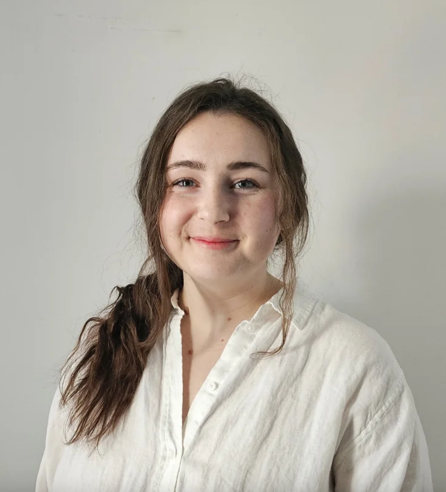
Catherine Manea
Catherine is a postdoctoral researcher at the University of Utah.
Yosemite National Park
August 17-21, 2026
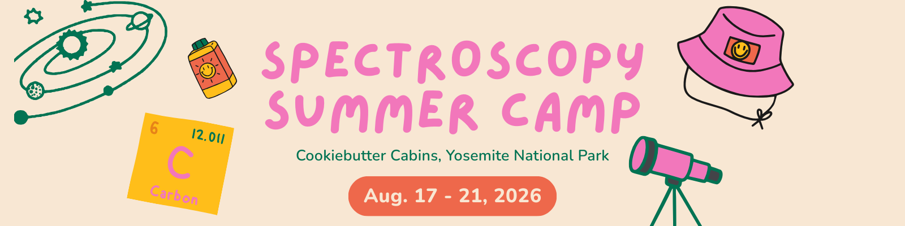
Scroll through to meet those attending the Workshop + Retreat.

Catherine is a postdoctoral researcher at the University of Utah.
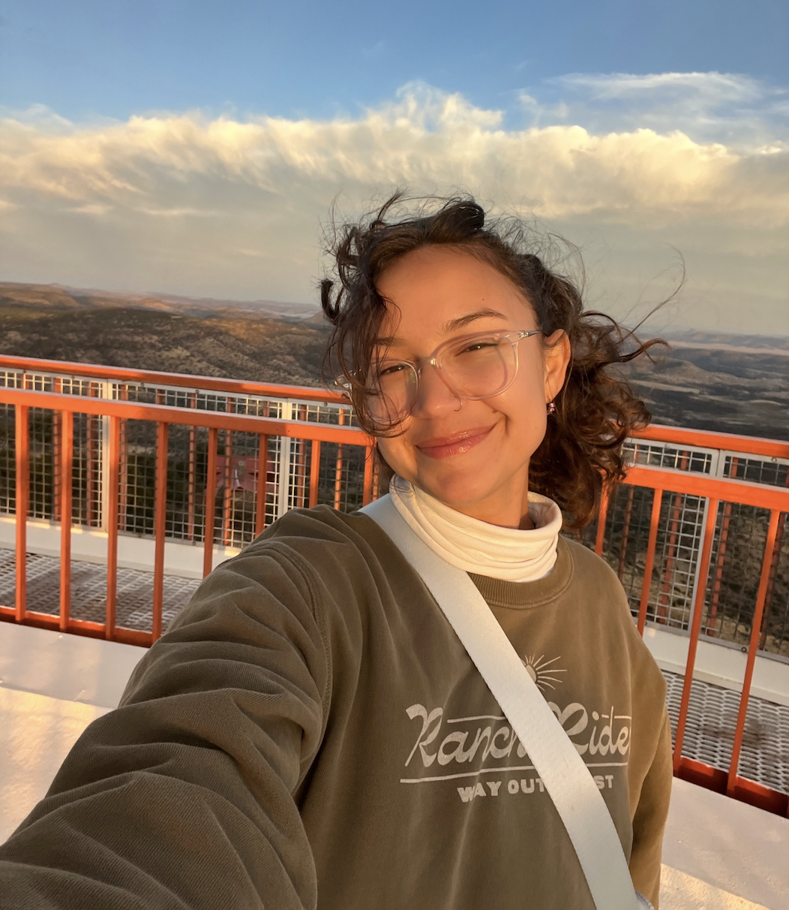
Zoe is a Ph.D. Candidate at the University of Texas at Austin.
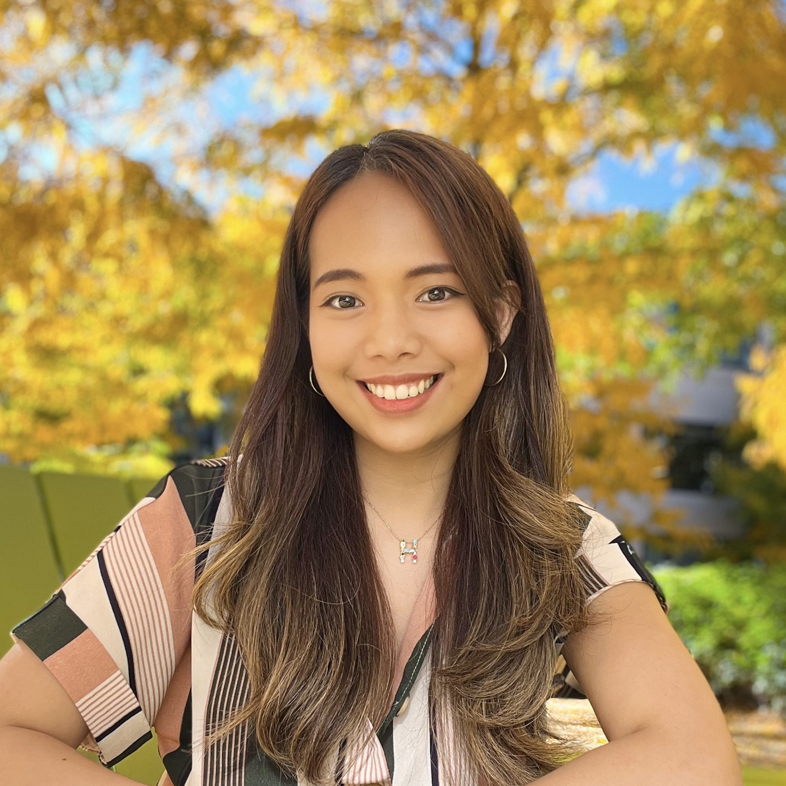
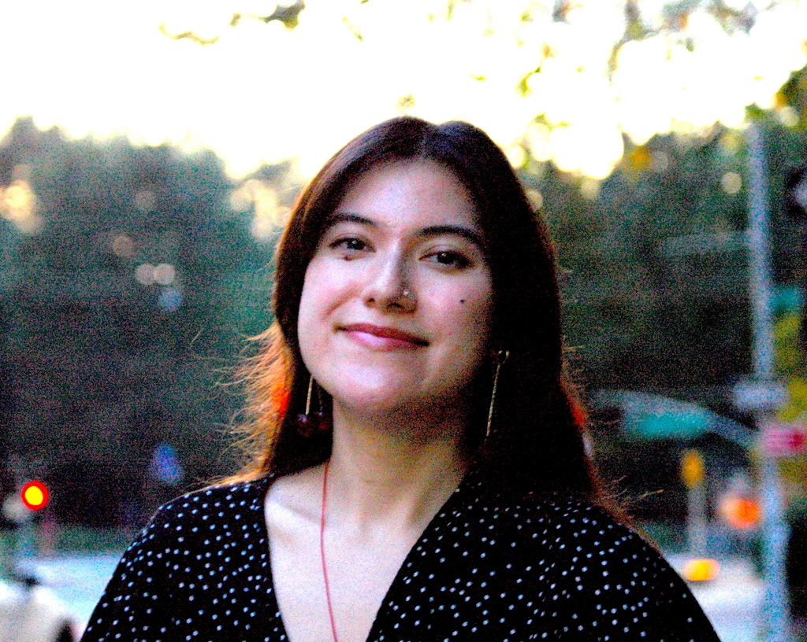
Aida is a postdoc at the CCA/Flatiron Institute. She is interested in spectroscopy of stars that host planets to understand how Milky Way-scale effects (e.g., Galactic chemical evolution) shape planet formation and evolution. She has mostly worked with high-resolution spectroscopy in the optical and near-IR so far, but is interested in extending to lower resolutions and different wavelengths, especially for getting abundances of weird/heavy elements for larger samples of stars!
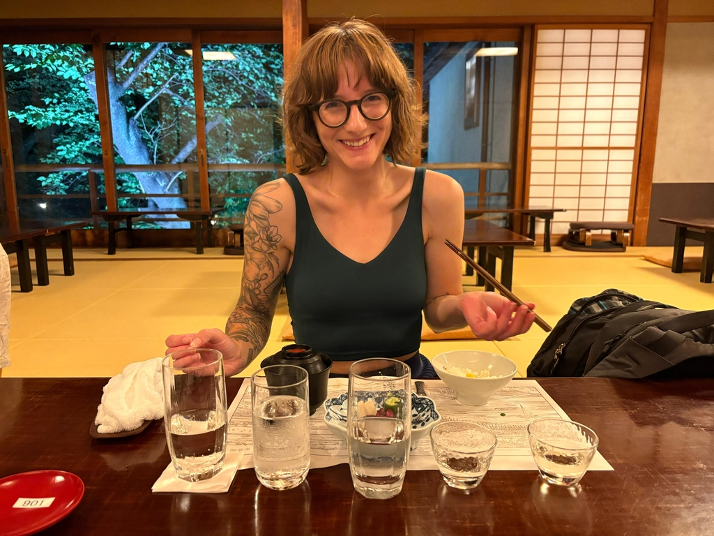
Carrie is a Local Group archaeologist and postdoc at the Flatiron Institute Center for Computational astrophysics. She studies how galaxies evolve in time both chemically and dynamically, and uses stellar spectroscopy to better understand the processes governing the Milky Way’s evolution.
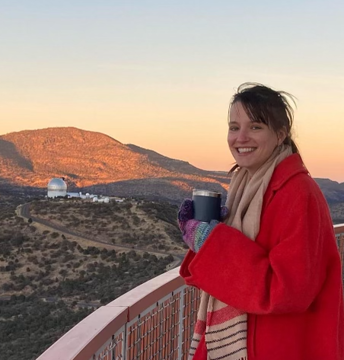
Maddie is a postdoctoral researcher at the University of Pennsylvania. She is interested in the chemistry of the oldest stars, especially if they have a lot of carbon.
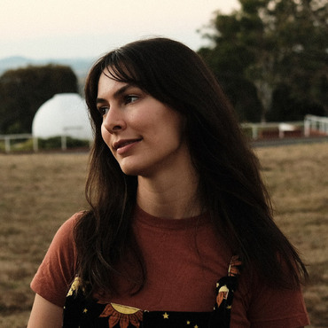
Madi is a postdoc at the Carnegie Observatories who loves globular clusters more than she could ever love a child. She specialises in high-precision isotopic abundance analysis. Recently she has been enjoying a brief foray into nuclear physics and one-zone nuclear reaction networks!
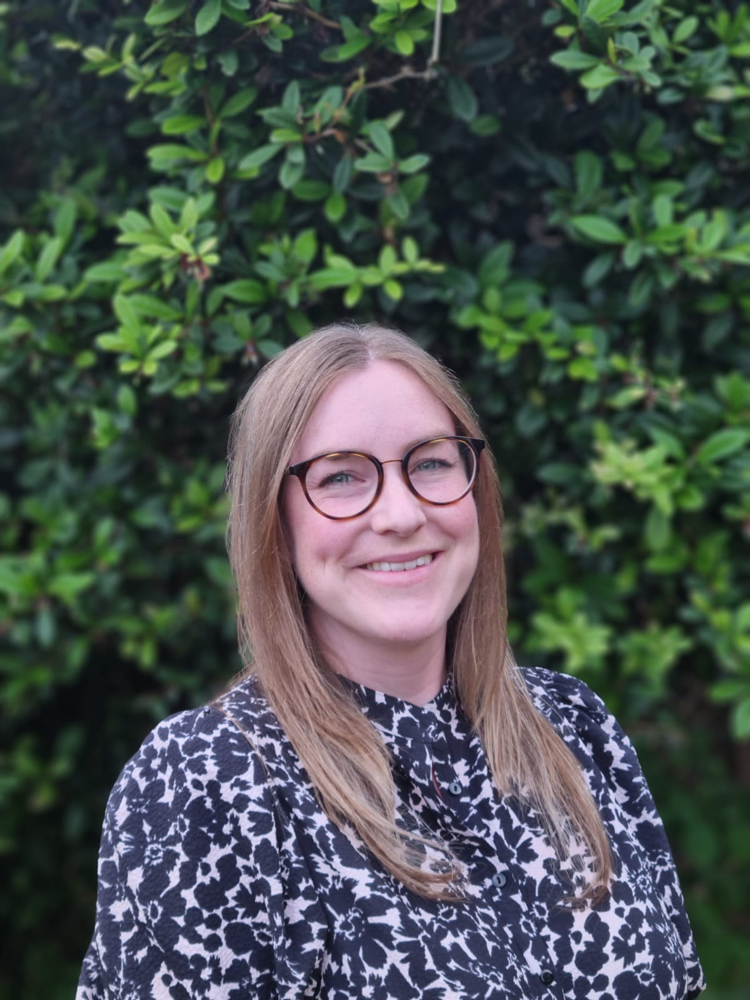
Steph is an incoming assistant professor at New Mexico State University. She is a big fan of star clusters and all that they can tell us about star and galaxy formation in the most extreme conditions and at the earliest times. She loves combining as many chemical abundances as she can recover with dynamics and ages to reconstruct the history of galaxies.

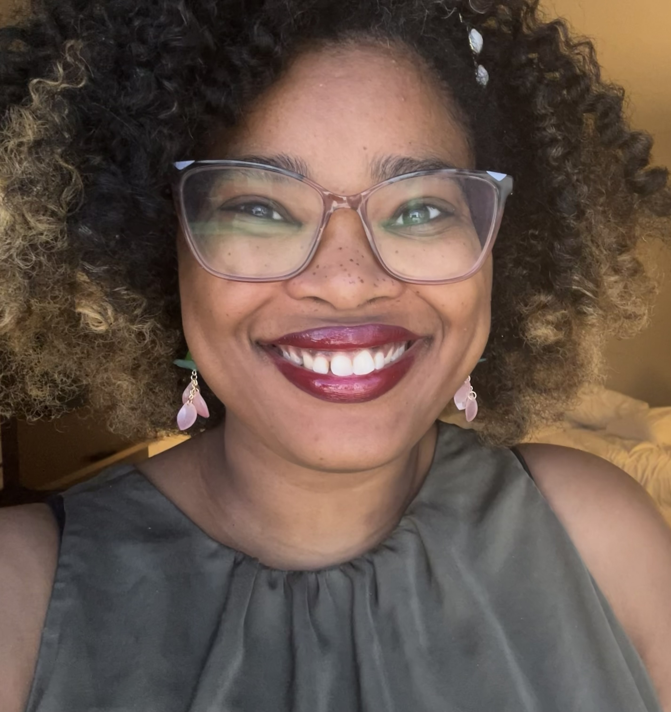
Caprice is a NASA Sagan Postdoctoral Fellow at University of California, Santa Cruz. She is generally interested in spectroscopy of solar-type stars that host brown dwarf companions. She has previously worked with ground-based high-resolution instruments like the PEPSI spectrograph on the Large Binocular Telescope.
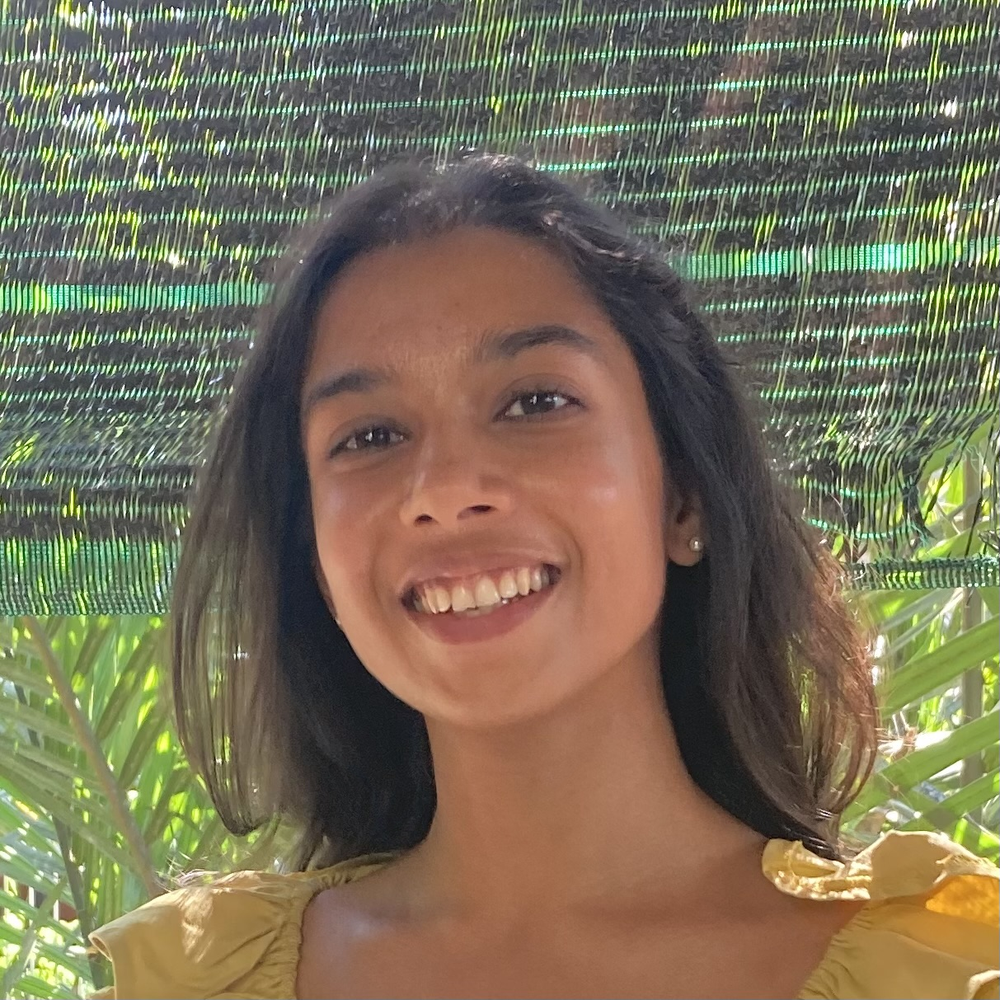
She is a Postdoc at North Carolina State University. Her expertise is in r-process nucleosynthesis and spectroscopy of heavy elements. She is also very interested in transients, near-field cosmology, and MW dynamics.
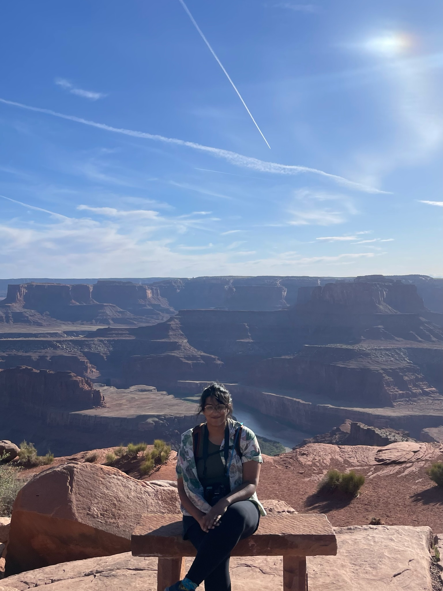
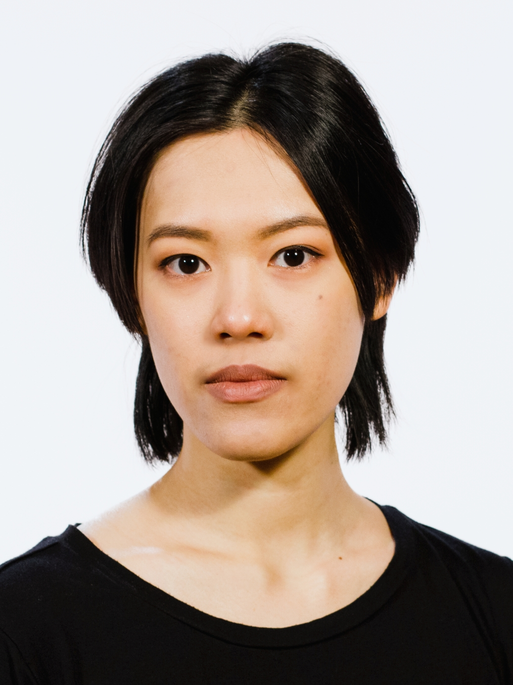
Tawny Sit is a PhD candidate at The Ohio State University working with David Weinberg and Jennifer Johnson. Their interests broadly fall under all things galactic archaeology, and more specifically abundance patterns and the intrinsic scatter of elements in the Milky Way. Outside of work, they are an avid dancer, dabble in garment sewing and cosplay, and can sometimes be found at metal concerts.